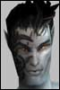

LLJKTonitrum
I Survived AO Con 2012
 Registered: Feb 2002
Posts: 51 | Event-Triggered Macros I came up with this idea during the team mission I just finished.
Here's a brief summary: messages and/or nanos cast when certain events occur (attacked, attacking someone/thing, health or nano reach a certain level, etc.)
A couple example uses that could really be appreciated:
ON HealthPercent BELOW 20:
SAY TO CHANNEL "Team" "I NEED HEAL!"
CASTNANO "Healing Aura" ON SELF
Or maybe something like:
ON NanoCast "Demotivate" (a mez nano):
SAY TO CHANNEL "Team" "---%t MEZZED, DO NOT ATTACK---"
You get the idea...that's more a psuedocode look at it, but hopefully you still get the idea. |
Mharc
Supa Leet
 Registered: Nov 2001
Posts: 540 | Hmm... Not sure I like this idea.
While I wouldn't mind a little more flexibility in the macro system, the additions you propose would make it very easy for people to create some perfect battle script, optimizing every aspect of their gameplay, eliminating the possibility for mistakes and acting on the spur of the moment... Basically, it would allow people to hit a key and sit back, watching the pretty pictures on the screen. |
MissMaul
Supa Leet
 Registered: May 2002
Posts: 1387 | What he said, and stuff...if this were possible, a talented scripter could basically execute a script in a team mission and walk away. |
geal
Supa Reet
 Registered: Jul 2002
Posts: 88 | or be like an enforcer..hit q and watch tv |
LLJKTonitrum
I Survived AO Con 2012
Registered: Feb 2002
Posts: 51 | Understandable concerns...but if the reactions are limited to what can currently be done by a macro, it might be less of a challenge to abuse.
That'd mean cutting the 'CastNano' action, of course, but I could live with that. |


 Last Thread Next Thread
Last Thread Next Thread 
 October 16th, 2002 23:33
October 16th, 2002 23:33